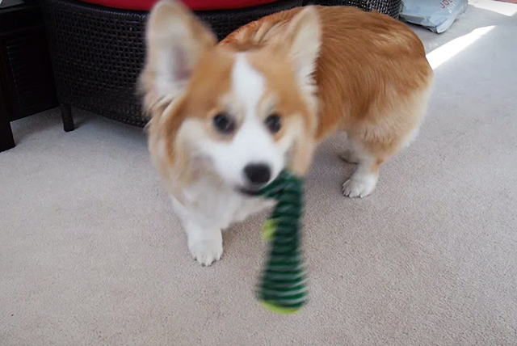
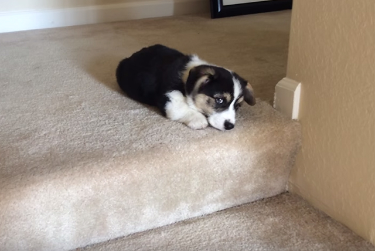
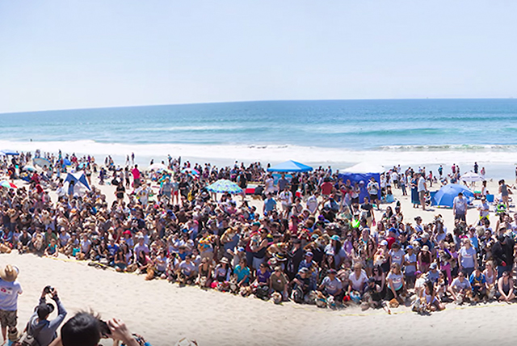
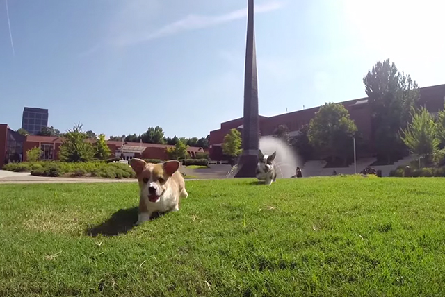
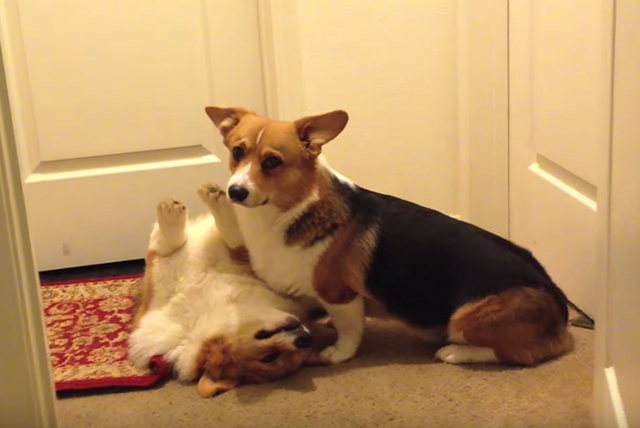

-
35 Corgis To Get You Through Your Day
From YouTube User: BuzzFeedVideo. Little stubby legs all day erry day!

-
Corgi Puppy Going Down Stairs
From YouTube User: Alvin Hsu. Here is my puppy Peanut Butter trying to go down the stairs at 9 weeks old.

-
World's Largest Corgi Gathering
From YouTube User: BuzzFeedVideo. Absolute heaven for corgi lovers.

-
GoPro: Corgi Puppies
From YouTube User: Sucette Baby. Six corgi puppies visited Georgia Tech on 7/26/2014. They had a blast exploring Tech's campus! The puppies are six weeks old. Shot with a GoPro HERO3+.

-
World's Laziest Corgi Fight
From YouTube User: darkominem. Two dorky corgis spending way too much time on their backs.
